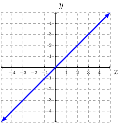
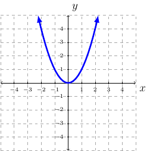
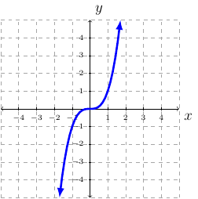
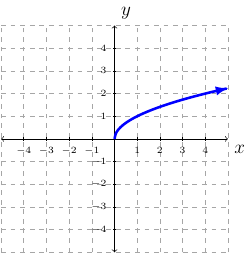
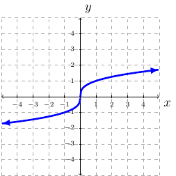
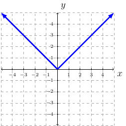

Section 2.6
Continuity
Definition 16
A function is continuous over an interval of its domain if its hand-drawn graph over that interval can be sketched without lifting the pencil from the paper.
Basic Graphs and Information
Definition 17 (Identity Function)
Identity Function: \(f(x)=x\).
Domain is \(\mathbb{R}\) or \((-\infty,\infty)\).
Range is \(\mathbb{R}\) or \((-\infty,\infty)\).
Continuous everywhere or \((-\infty,\infty)\).
Increasing everywhere or \((-\infty,\infty)\).

Definition 18 (Squaring Function)
Squaring Function: \(f(x)=x^2\).
Domain is \(\mathbb{R}\) or \((-\infty,\infty)\).
Range is \([0,\infty)\).
Contiuous everywhere or \((-\infty,\infty)\).
Decreasing on \((-\infty,0)\).
Increasing on \((0,\infty)\).

Definition 19 (Cubing Function)
Cubing Function: \(f(x)=x^3\)
Domain is \(\mathbb{R}\) or \((-\infty,\infty)\).
Range is \(\mathbb{R}\) or \((-\infty,\infty)\).
Continuous everywhere or \((-\infty,\infty)\).
Increasing everywhere or \((-\infty,\infty)\).

Definition 20 (Square Root Function)
Square Root Function: \(f(x)=\sqrt{x}\).
Domain is \([0,\infty)\).
Range is \([0,\infty)\).
Continuous on \([0,\infty)\).
Increasing on \((0,\infty)\).

Definition 21 (Cube Root Function)
Cube Root Function: \(f(x)=\sqrt[3]{x}\)
Domain is \(\mathbb{R}\) or \((-\infty,\infty)\).
Range is \(\mathbb{R}\) or \((-\infty,\infty)\).
Continuous everywhere or \((-\infty,\infty)\).
Increasing everywhere or \((-\infty,\infty)\).

Definition 22 (Absolute Value Function)
Absolute Value Function: \(f(x)=|x|\).
Domain is \(\mathbb{R}\) or \((-\infty,\infty)\).
Range is \([0,\infty)\).
Continuous everywhere or \((-\infty,\infty)\).
Decreasing on \((-\infty,0)\).
Increasing on \((0,\infty)\).
